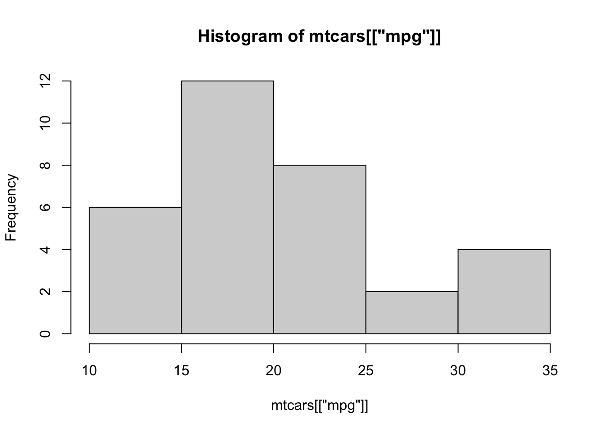

2 Adicionando interatividade
A interatividade de um aplicativo Shiny é dada pela relação de inputs e outputs. Os inputs permitem enviarmos informação para o servidor, que é utilizada na construção dos outputs devolvidos para a tela.
A seguir, mostraremos como adicionar inputs e outputs a um Shiny app. Começaremos com os outputs, dando nossos primeiros passos na construção da função server.
2.1 Adicionando outputs
Outputs representam as saídas do nosso aplicativo, isto é, tudo que queremos que nosso código R retorne para a UI. Essas saídas podem ser tabelas, gráficos, mapas, texto, imagens ou qualquer outro elemento HTML.
Os outputs são definidos na UI e criados no server. Cada tipo de output é definido por uma função do tipo *Output(). Veja as principais funções dessa família:
Essas funções especificam onde os outputs serão colocados dentro da UI. Elas não especificam como eles serão criados. Para isso, utilizamos as funções do tipo render*(), responsáveis por definir o código R que gera cada output. Além disso, elas renderizam os resultados para HTML, possibilitando que essas visualizações sejam inseridas no código HTML que gera a UI. Na grande maioria dos casos, teremos o par visualizacaoOutput() e renderVisualizacao().
Veja a seguir as principais funções render*() e como elas se comunicam com as funções *Output().
O argumento outputId das funções *Output() é utilizado para identificarmos cada output dentro da função server. Todos os outputs criados ficarão dentro da lista output. Veja a seguir, o exemplo de um aplicativo que contém um histograma da variável mpg da base mtcars.
library(shiny)
ui <- fluidPage(
"Histograma da variável mpg",
plotOutput(outputId = "histograma")
)
server <- function(input, output, session) {
output$histograma <- renderPlot({
hist(mtcars$mpg)
})
}
shinyApp(ui, server)No código acima:
a função
plotOutput()especifica o lugar na UI onde será colocado o histograma (no caso, logo abaixo do texto"Histograma da variável mpg");para criar o histograma, atribuímos o resultado da função
renderPlot()ao valorhistogramada listaoutput, mesmo nome dado ao argumentooutputIdna funçãoplotOutput();a função
renderPlot(), assim com qualquer outra função da famíliarender*(), recebe como primeiro argumento o código para gerar o output;o histograma é gerado com o código
hist(mtcars$mpg).
Rode o código anterior para ver o aplicativo resultante. Repare que, embora tenhamos uma visualização sendo construída no servidor, ainda não temos interatividade, isto é, não conseguimos mudar nada no conteúdo dessa visualização a partir da UI.
Importante! Podemos apenas escrever na lista output. Se tentarmos ler um valor dessa lista, o Shiny retornará um erro.
output$histograma
#> Error in $.shinyoutput: Reading from shinyoutput object is not allowed.Para fechar o ciclo da interatividade, precisamos agora incluir inputs.
2.2 Adicionando inputs
Inputs representam as entradas do nosso aplicativo, isto é, a maneira como informações são transmitidas entre a pessoa usando o app e o servidor. Essas informações podem ser valores, textos, datas, arquivos ou até mesmo cliques em um botão. Para facilitar a escolha desses valores1, o pacote shiny possibilita diversas opções de widgets2, a depender do tipo de valor a ser passado.
Você pode conferir a lista de widgets do pacote shiny nesta página. Repare que no campo Current Value(s) é mostrado qual valor será levado para dentro da função server em cada caso.
Para criar esses widgets utilizamos as famílias de funções *Input() ou *Button. De forma análoga ao outputId das funções *Output(), todas essas funções possuem inputId como primeiro argumento, que recebe uma string e será utilizado para acessar dentro da função server cada um dos inputs criados. Isso implica que dois inputs não podem ter o mesmo inputId.
No código a seguir, incluímos no app da seção anterior uma caixa de seleção que permite a escolha da variável que será utilizada no histograma. Rode esse app e veja que o gráfico é recalculado sempre que alteramos a variável na caixa de seleção.
library(shiny)
ui <- fluidPage(
"Histograma da variável mpg",
selectInput(
inputId = "variavel",
label = "Selecione uma variável",
choices = names(mtcars)
),
plotOutput(outputId = "histograma")
)
server <- function(input, output, session) {
output$histograma <- renderPlot({
hist(mtcars[[input$variavel]])
})
}
shinyApp(ui, server)A caixa de seleção foi criada pela função selectInput(). Essa função requer 3 argumentos:
o
inputId, como discutido anteriormente;o
label, que será mostrado na tela e indica a quem estiver usando o app o que está sendo escolhido nesse input3;e o
choices, um vetor com as possíveis escolhas da caixa de seleção.
Para acessar o valor do input na função server, utilizamos a lista input e o nome dado no argumento inputId da função selectInput() (no caso, "variavel"). A lista input guarda todos os inputs criados na UI e, ao contrário da lista output, ela é somente leitura. Se você tentar escrever diretamente na lista input, o Shiny retornará um erro.
input$variavel <- 10
#> Error in : Can't modify read-only reactive value 'variavelO widget selectInput() envia ao servidor uma string com o valor escolhido na caixa de seleção. Por isso utilizamos o operador [[ para fazer a seleção da variável. Quando o app é iniciado, por exemplo, input$variavel recebe o valor "mpg" e, por consequência, mtcars[[input$variavel]] será igual a mtcars[["mpg"]], que retorna um vetor com os valores da coluna mpg e será utilizado pela função hist() para gerar o gráfico.
mtcars[["mpg"]] [1] 21.0 21.0 22.8 21.4 18.7 18.1 14.3 24.4 22.8 19.2 17.8 16.4 17.3 15.2 10.4
[16] 10.4 14.7 32.4 30.4 33.9 21.5 15.5 15.2 13.3 19.2 27.3 26.0 30.4 15.8 19.7
[31] 15.0 21.4hist(mtcars[["mpg"]])
O código a seguir gera um app com dois inputs e dois outputs. Rode o app e veja que cada input está associado a apenas um output.
library(shiny)
variaveis <- names(mtcars)
ui <- fluidPage(
selectInput(
inputId = "variavel_A",
label = "Variável A",
choices = variaveis
),
plotOutput(outputId = "histograma_A"),
selectInput(
inputId = "variavel_B",
label = "Variável B",
choices = variaveis,
selected = variaveis[2],
),
plotOutput(outputId = "histograma_B")
)
server <- function(input, output, session) {
output$histograma_A <- renderPlot({
print("Gerando histograma A...")
hist(mtcars[[input$variavel_A]], main = "Histograma A")
})
output$histograma_B <- renderPlot({
print("Gerando histograma B...")
hist(mtcars[[input$variavel_B]], main = "Histograma B")
})
}
shinyApp(ui, server)Repare pelas mensagens no Console4 que, quando alteramos o valor da variável A, apenas o histograma A é recalculado. O mesmo vale para variável B e o histograma B. Isso acontece porque a relação entre inputs e outputs é mapeada quando rodamos o app e, quando modificamos um input, o Shiny roda novamente apenas o código necessário para recalcular os outputs associados a ele. Para entender como isso é feito e como podemos tirar proveito disso, precisamos entender o conceito de reatividade. Esse será o tópico do próximo capítulo.
2.3 Exercícios
1 - No contexto do Shiny, o que são inputs? E outputs?
2 - Como fazemos para acessar os valores dos inptus dentro da função server?
3 - Qual a função da família de funções *Output()? Onde essas funções são utilizadas?
4 - Qual a função da família de funções render*()? Onde essas funções são utilizadas?
5 - Faça um shiny app para visualizar histogramas da base ggplot2::diamonds e o coloque no shinyapps.io.
Seu shiny deve ter um input e um output.
- Input: variáveis numéricas da base
diamonds. - Output: histograma da variável selecionada.
Para acessar a base diamonds, carregue o pacote ggplot2
library(ggplto2)
diamonds
# ou rode
ggplot2::diamonds6 - Reproduza este Shiny app.
Para acessar a base utilizada, rode o código abaixo:
# Pacote com versão original da base (em inglês)
install.packages("nycflights13")
nycflights13::flights
# Pacote com versão em português da base
install.packages("dados")
dados::voosIsto é, melhorar a experiência de uso do aplicativo (UX, sigla para o termo em inglês user experience).↩︎
Termo em inglês utilizado para se referir a elementos de interação, como caixas de seleção, botões, menus, ícones etc. Como esse termo dentro da literatura do Shiny é muito comum, vamos utilizá-lo neste livro para não criar grandes diferenças com as nomenclaturas de outras referências.↩︎
A maioria das funções
*Input()possui esse argumento.↩︎Essas mensagens são geradas pelas funções
print()presentes dentro de cadarenderPlot(). Essas mensagens não aparecem no app, apenas no Console, e são uma boa alternativa para testar e procurar erros no código.↩︎